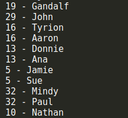

在前一篇文章中，我们介绍了如何在JavaScript中实现集合。字典和集合的主要区别就在于，集合中数据是以[值，值]的形式保存的，我们只关心值本身；而在字典和散列表中数据是以[键，值]的形式保存的，键不能重复，我们不仅关心键，也关心键所对应的值。
我们也可以把字典称之为映射表。由于字典和集合很相似，我们可以在前一篇文章中的集合类Set的基础上来实现我们的字典类Dictionary。与Set类相似，ES6的原生Map类已经实现了字典的全部功能，稍后我们会介绍它的用法。
下面是我们的Dictionary字典类的实现代码：
class Dictionary {
constructor () {
this.items = {};
}
set (key, value) { // 向字典中添加或修改元素
this.items[key] = value;
}
get (key) { // 通过键值查找字典中的值
return this.items[key];
}
delete (key) { // 通过使用键值来从字典中删除对应的元素
if (this.has(key)) {
delete this.items[key];
return true;
}
return false;
}
has (key) { // 判断给定的键值是否存在于字典中
return this.items.hasOwnProperty(key);
}
clear() { // 清空字典内容
this.items = {};
}
size () { // 返回字典中所有元素的数量
return Object.keys(this.items).length;
}
keys () { // 返回字典中所有的键值
return Object.keys(this.items);
}
values () { // 返回字典中所有的值
return Object.values(this.items);
}
getItems () { // 返回字典中的所有元素
return this.items;
}
}与Set类很相似，只是把其中value的部分替换成了key。我们来看看一些测试用例：
let Dictionary = require('./dictionary');
let dictionary = new Dictionary();
dictionary.set('Gandalf', 'gandalf@email.com');
dictionary.set('John', 'john@email.com');
dictionary.set('Tyrion', 'tyrion@email.com');
console.log(dictionary.has('Gandalf')); // true
console.log(dictionary.size()); // 3
console.log(dictionary.keys()); // [ 'Gandalf', 'John', 'Tyrion' ]
console.log(dictionary.values()); // [ 'gandalf@email.com', 'john@email.com', 'tyrion@email.com' ]
console.log(dictionary.get('Tyrion')); // tyrion@email.com
dictionary.delete('John');
console.log(dictionary.keys()); // [ 'Gandalf', 'Tyrion' ]
console.log(dictionary.values()); // [ 'gandalf@email.com', 'tyrion@email.com' ]
console.log(dictionary.getItems()); // { Gandalf: 'gandalf@email.com', Tyrion: 'tyrion@email.com' }相应地，下面是使用ES6的原生Map类的测试结果：
let dictionary = new Map();
dictionary.set('Gandalf', 'gandalf@email.com');
dictionary.set('John', 'john@email.com');
dictionary.set('Tyrion', 'tyrion@email.com');
console.log(dictionary.has('Gandalf')); // true
console.log(dictionary.size); // 3
console.log(dictionary.keys()); // [Map Iterator] { 'Gandalf', 'John', 'Tyrion' }
console.log(dictionary.values()); // [Map Iterator] { 'gandalf@email.com', 'john@email.com', 'tyrion@email.com' }
console.log(dictionary.get('Tyrion')); // tyrion@email.com
dictionary.delete('John');
console.log(dictionary.keys()); // [Map Iterator] { 'Gandalf', 'Tyrion' }
console.log(dictionary.values()); // [Map Iterator] { 'gandalf@email.com', 'tyrion@email.com' }
console.log(dictionary.entries()); // [Map Iterator] { [ Gandalf: 'gandalf@email.com' ], [ Tyrion: 'tyrion@email.com' ] }和前面我们自定义的Dictionary类稍微有一点不同，values()方法和keys()方法返回的不是一个数组，而是Iterator迭代器。另一个就是这里的size是一个属性而不是方法，然后就是Map类没有getItems()方法，取而代之的是entries()方法，它返回的也是一个Iterator。有关Map类的详细详细介绍可以查看这里。
在ES6中，除了原生的Set和Map类外，还有它们的弱化版本，分别是WeakSet和WeakMap，我们在《JavaScript数据结构——栈的实现与应用》一文中已经见过WeakMap的使用了。Map和Set与它们各自的弱化版本之间的主要区别是：
弱化的Map和Set类主要是为了提供JavaScript代码的性能。
散列表（或者叫哈希表），是一种改进的dictionary，它将key通过一个固定的算法（散列函数或哈希函数）得出一个数字，然后将dictionary中key所对应的value存放到这个数字所对应的数组下标所包含的存储空间中。在原始的dictionary中，如果要查找某个key所对应的value，我们需要遍历整个字典。为了提高查询的效率，我们将key对应的value保存到数组里，只要key不变，使用相同的散列函数计算出来的数字就是固定的，于是就可以很快地在数组中找到你想要查找的value。下面是散列表的数据结构示意图：
下面是我们散列函数loseloseHashCode()的实现代码：
loseloseHashCode (key) {
let hash = 0;
for (let i = 0; i < key.length; i++) {
hash += key.charCodeAt(i);
}
return hash % 37;
}这个散列函数的实现很简单，我们将传入的key中的每一个字符使用charCodeAt()函数（有关该函数的详细内容可以查看这里）将其转换成ASCII码，然后将这些ASCII码相加，最后用37求余，得到一个数字，这个数字就是这个key所对应的hash值。接下来要做的就是将value存放到hash值所对应的数组的存储空间内。下面是我们的HashTable类的主要实现代码：
class HashTable {
constructor () {
this.table = [];
}
loseloseHashCode (key) { // 散列函数
let hash = 0;
for (let i = 0; i < key.length; i++) {
hash += key.charCodeAt(i);
}
return hash % 37;
}
put (key, value) { // 将键值对存放到哈希表中
let position = this.loseloseHashCode(key);
console.log(`${position} - ${key}`);
this.table[position] = value;
}
get (key) { // 通过key查找哈希表中的值
return this.table[this.loseloseHashCode(key)];
}
remove (key) { // 通过key从哈希表中删除对应的值
this.table[this.loseloseHashCode(key)] = undefined;
}
isEmpty () { // 判断哈希表是否为空
return this.size() === 0;
}
size () { // 返回哈希表的长度
let count = 0;
this.table.forEach(item => {
if (item !== undefined) count++;
});
return count;
}
clear () { // 清空哈希表
this.table = [];
}
}测试一下上面的这些方法：
let HashTable = require('./hashtable');
let hash = new HashTable();
hash.put('Gandalf', 'gandalf@email.com'); // 19 - Gandalf
hash.put('John', 'john@email.com'); // 29 - John
hash.put('Tyrion', 'tyrion@email.com'); // 16 - Tyrion
console.log(hash.isEmpty()); // false
console.log(hash.size()); // 3
console.log(hash.get('Gandalf')); // gandalf@email.com
console.log(hash.get('Loiane')); // undefined
hash.remove('Gandalf');
console.log(hash.get('Gandalf')); // undefined
hash.clear();
console.log(hash.size()); // 0
console.log(hash.isEmpty()); // true为了方便查看hash值和value的对应关系，我们在put()方法中加入了一行console.log()，用来打印key的hash值和value之间的对应关系。可以看到，测试的结果和前面我们给出的示意图是一致的。
散列集合的实现和散列表类似，只不过在散列集合中不再使用键值对，而是只有值没有键。这个我们在前面介绍集合和字典的时候已经讲过了，这里不再赘述。
细心的同学可能已经发现了，这里我们提供的散列函数可能过于简单，以致于我们无法保证通过散列函数计算出来的hash值一定是唯一的。换句话说，传入不同的key值，我们有可能会得到相同的hash值。尝试一下下面这些keys：
let hash = new HashTable();
hash.put('Gandalf', 'gandalf@email.com');
hash.put('John', 'john@email.com');
hash.put('Tyrion', 'tyrion@email.com');
hash.put('Aaron', 'aaron@email.com');
hash.put('Donnie', 'donnie@email.com');
hash.put('Ana', 'ana@email.com');
hash.put('Jamie', 'jamie@email.com');
hash.put('Sue', 'sue@email.com');
hash.put('Mindy', 'mindy@email.com');
hash.put('Paul', 'paul@email.com');
hash.put('Nathan', 'nathan@email.com');
从结果中可以看到，尽管有些keys不同，但是通过我们提供的散列函数居然得到了相同的hash值，这显然违背了我们的设计原则。在哈希表中，这个叫做散列冲突，为了得到一个可靠的哈希表，我们必须尽可能地避免散列冲突。那如何避免这种冲突呢？这里介绍两种解决冲突的方法：分离链接和线性探查。
所谓分离链接，就是将原本存储在哈希表中的值改成链表，这样在哈希表的同一个位置上，就可以存储多个不同的值。链表中的每一个元素，同时存储了key和value。示意图如下：
这样，当不同的key通过散列函数计算出相同的hash值时，我们只需要找到数组中对应的位置，然后往其中的链表添加新的节点即可，从而有效地避免了散列冲突。为了实现这种数据结构，我们需要定义一个新的辅助类ValuePair，它的内容如下：
let ValuePair = function (key, value) {
this.key = key;
this.value = value;
this.toString = function () { // 提供toString()方法以方便我们测试
return `[${this.key} - ${this.value}]`;
}
};ValuePair类具有两个属性，key和value，用来保存我们要存入到散列表中的元素的键值对。toString()方法在这里不是必须的，该方法是为了后面我们方便测试。
新的采用了分离链接的HashTableSeparateChaining类可以继承自前面的HashTable类，完整的代码如下：
class HashTableSeparateChaining extends HashTable {
constructor () {
super();
}
put (key, value) {
let position = this.loseloseHashCode(key);
if (this.table[position] === undefined) {
this.table[position] = new LinkedList(); // 单向链表，需要引入LinkedList类
}
this.table[position].append(new ValuePair(key, value));
}
get (key) {
let position = this.loseloseHashCode(key);
if (this.table[position] !== undefined) {
let current = this.table[position].getHead();
while (current) {
if (current.element.key === key) return current.element.value;
current = current.next;
}
}
return undefined;
}
remove (key) {
let position = this.loseloseHashCode(key);
let hash = this.table[position];
if (hash !== undefined) {
let current = hash.getHead();
while (current) {
if (current.element.key === key) {
hash.remove(current.element);
if (hash.isEmpty()) this.table[position] = undefined;
return true;
}
current = current.next;
}
}
return false;
}
size () {
let count = 0;
this.table.forEach(item => {
if (item !== undefined) count += item.size();
});
return count;
}
toString() {
let objString = "";
for (let i = 0; i < this.table.length; i++) {
let ci = this.table[i];
if (ci === undefined) continue;
objString += `${i}: `;
let current = ci.getHead();
while (current) {
objString += current.element.toString();
current = current.next;
if (current) objString += ', ';
}
objString += '\r\n';
}
return objString;
}
}其中的LinkedList类为单向链表，具体内容可以查看《JavaScript数据结构——链表的实现与应用》。注意，现在hash数组中的每一个元素都是一个单向链表，单向链表的所有操作我们可以借助于LinkedList类来完成。我们重写了size()方法，因为现在要计算的是数组中所有链表的长度总和。
下面是HashTableSeparateChaining类的测试用例及结果：
let hash = new HashTableSeparateChaining();
hash.put('Gandalf', 'gandalf@email.com');
hash.put('John', 'john@email.com');
hash.put('Tyrion', 'tyrion@email.com');
hash.put('Aaron', 'aaron@email.com');
hash.put('Donnie', 'donnie@email.com');
hash.put('Ana', 'ana@email.com');
hash.put('Jamie', 'jamie@email.com');
hash.put('Sue', 'sue@email.com');
hash.put('Mindy', 'mindy@email.com');
hash.put('Paul', 'paul@email.com');
hash.put('Nathan', 'nathan@email.com');
console.log(hash.toString());
console.log(`size: ${hash.size()}`);
console.log(hash.get('John'));
console.log(hash.remove('Ana'));
console.log(hash.remove('John'));
console.log(hash.toString());可以看到，结果和上面示意图上给出的是一致的，size()、remove()和get()方法的执行结果也符合预期。
避免散列冲突的另一种方法是线性探查。当向哈希数组中添加某一个新元素时，如果该位置上已经有数据了，就继续尝试下一个位置，直到对应的位置上没有数据时，就在该位置上添加数据。我们将上面的例子改成线性探查的方式，存储结果如下图所示：
现在我们不需要单向链表LinkedList类了，但是ValuePair类仍然是需要的。同样的，我们的HashTableLinearProbing类继承自HashTable类，完整的代码如下：
class HashTableLinearProbing extends HashTable {
constructor () {
super();
}
put (key, value) {
let position = this.loseloseHashCode(key);
if (this.table[position] === undefined) {
this.table[position] = new ValuePair(key, value);
}
else {
let index = position + 1;
while (this.table[index] !== undefined) {
index ++;
}
this.table[index] = new ValuePair(key, value);
}
}
get (key) {
let position = this.loseloseHashCode(key);
if (this.table[position] !== undefined) {
if (this.table[position].key === key) return this.table[position].value;
let index = position + 1;
while (this.table[index] !== undefined && this.table[index].key === key) {
index ++;
}
return this.table[index].value;
}
return undefined;
}
remove (key) {
let position = this.loseloseHashCode(key);
if (this.table[position] !== undefined) {
if (this.table[position].key === key) {
this.table[position] = undefined;
return true;
}
let index = position + 1;
while (this.table[index] !== undefined && this.table[index].key !== key) {
index ++;
}
this.table[index] = undefined;
return true;
}
return false;
}
toString() {
let objString = "";
for (let i = 0; i < this.table.length; i++) {
let ci = this.table[i];
if (ci === undefined) continue;
objString += `${i}: ${ci}\r\n`;
}
return objString;
}
}使用上面和HashTableSeparateChaining类相同的测试用例，我们来看看测试结果：
可以和HashTableSeparateChaining类的测试结果比较一下，多出来的位置6、14、17、33，正是HashTableSeparateChaining类中每一个链表的剩余部分。get()和remove()方法也能正常工作，我们不需要重写size()方法，和基类HashTable中一样，hash数组中每一个位置只保存了一个元素。另一个要注意的地方是，由于JavaScript中定义数组时不需要提前给出数组的长度，因此我们可以很容易地利用JavaScript语言的这一特性来实现线性探查。在某些编程语言中，数组的定义是必须明确给出长度的，这时我们就需要重新考虑我们的HashLinearProbing类的实现了。
loseloseHashCode()散列函数并不是一个表现良好的散列函数，正如你所看到的，它会很轻易地产生散列冲突。一个表现良好的散列函数必须能够尽可能低地减少散列冲突，并提高性能。我们可以在网上找一些不同的散列函数的实现方法，下面是一个比loseloseHashCode()更好的散列函数djb2HashCode()：
djb2HashCode (key) {
let hash = 5381;
for (let i = 0; i < key.length; i++) {
hash = hash * 33 + key.charCodeAt(i);
}
return hash % 1013;
}我们用相同的测试用例来测试dj2HashCode()，下面是测试结果：
这次没有冲突！然而这并不是最好的散列函数，但它是社区最推崇的散列函数之一。
下一章我们将介绍如何用JavaScript来实现树。